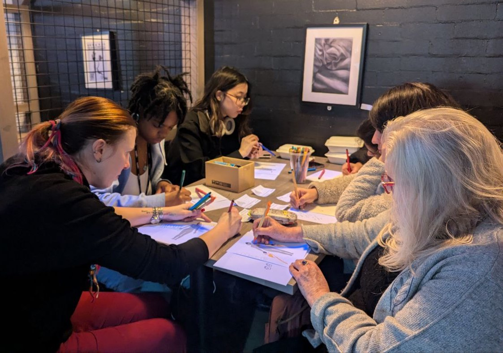
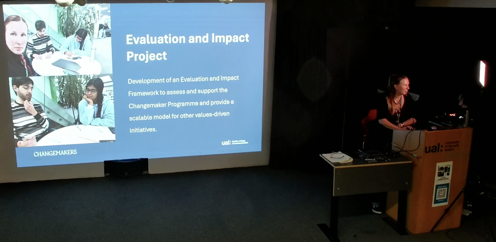
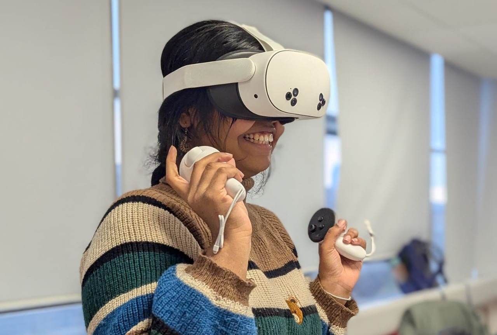

LCC Changemakers test an on-paper activity.
The Situated Evaluation Framework centers lived experience and identity in assessing impact, focusing on the personal and collective journeys of students and staff rather than just traditional outcomes.

Co-developed with Saranya Satheesh and Jiayi Wu through collaboration and testing with the Changemakers of the London College of Communication (LCC), it combines various methods to help Changemakers lead their own evaluations using their perspectives.

The framework merges digital and in-person tools, with on-paper activities and a VR prototype in development.
Future plans include refining the approach and sharing insights more broadly to support equitable and meaningful evaluation practices.
Future plans include refining the approach and sharing insights more broadly to support equitable and meaningful evaluation practices.
“[Chiara's] collaborative approach and deep understanding of the wider learning ecosystem allow her to engage meaningfully across all levels: students, staff, and external partners. Chiara champions authentic feedback practices, using dynamic methods like focus groups and student panels to foster co-creation and responsive pedagogy. Her work is a model of thoughtful, student-led innovation that enhances both learning and institutional practice.”